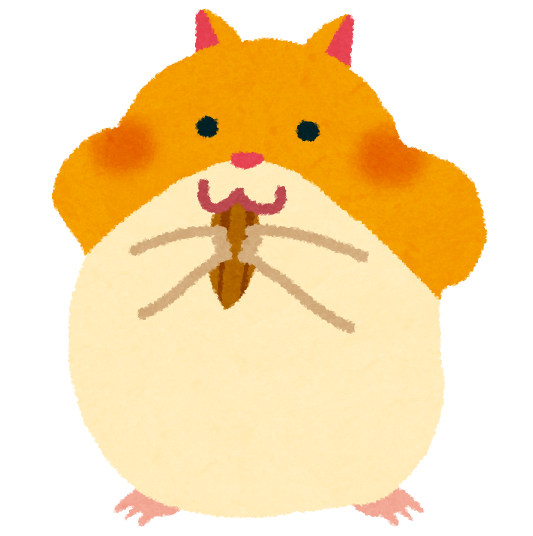
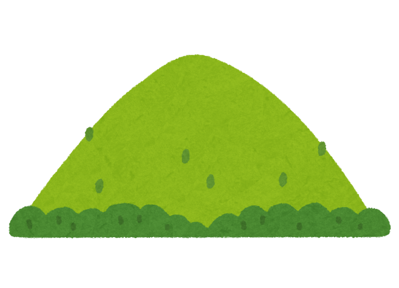
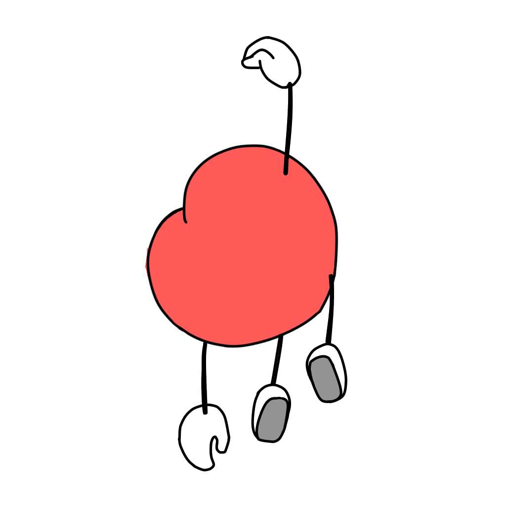

PROFILE
信念
理解されることを求めるよりも、理解することを求める人間でいること。
認められることを求めるよりも、認めることを求める人間でいること。
仕事
ものごとを改善するために学び続けることが座右の銘です。
周囲の意思と出来事の仕組みを理解しながら、
より良いものを生み出すことや、その環境作りを模索します。
興味
興味があることはたくさんあります。
その中でも特に関心があることを３つ紹介させてください。
考え方を広げるために様々な種類の本を読んでいます。文学作品は宮沢賢治が好きです。

ハムスターは癒しです。以前飼っていました。犬や猫、ペットにできる生き物はだいたい好きです。

山登りやハイキングをします。詳しくないのですが野生の草木と花に興味があります。
